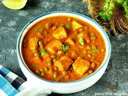

Matar Paneer

Description
Matar paneer recipe is a popular Indian Curry dish made with green peas
and Paneer (Indian cottage cheese) in a base of onions, tomatoes, cashews,
spices and herbs.
The recipe hails from the versatile Northern Indian cuisine that has many
different (and delicious) variations.
Ingredients
- Paneer
- Peas
- Tomatoes
- Onions
- Red chilli powder
- Coriander powder
- Matar Paneer masala
- Turmetic powder
- Garam masala
- Cumin Seeds
Steps
-
Firstly, in a pan heat 2 tbsp oil. add 2 onions, 4 cloves garlic, and
2-inch ginger.
- Saute until the onions turn golden brown.
-
Add 4 tomatoes, and 2 tbsp cashew, and saute until the tomato turn soft
and mushy.
- Cool completely, and transfer to a mixer jar.
- Grind to smooth paste without adding water.
-
To prepare curry, heat 2 tbsp oil. add 1 tsp ghee, 1 tsp cumin, ½ inch
cinnamon, 3 pods cardamom, and 2 chilies. Saute until the spices turn
aromatic.
-
Keeping the flame on low, add ½ tsp turmeric, 1 tsp chili powder, ½ tsp
coriander powder, ½ tsp cumin powder, and ½ tsp garam masala.
- Saute until the spices turn aromatic.
- Now add prepared gravy and cook well.
- Keep cooking until the oil separates from the gravy base.
- Further, add 3 cup water and 1 tsp salt.
- Mix well adjusting the consistency of the gravy.
- Further, add 1½ cups of peas and 200 grams of paneer. Mix well.
- Cover and cook for 5 minutes or until the peas are cooked well.
- Add 2 tbsp cream, 1 tsp kasuri methi, and 2 tbsp coriander.
- Finally, enjoy matar paneer with roti or rice.